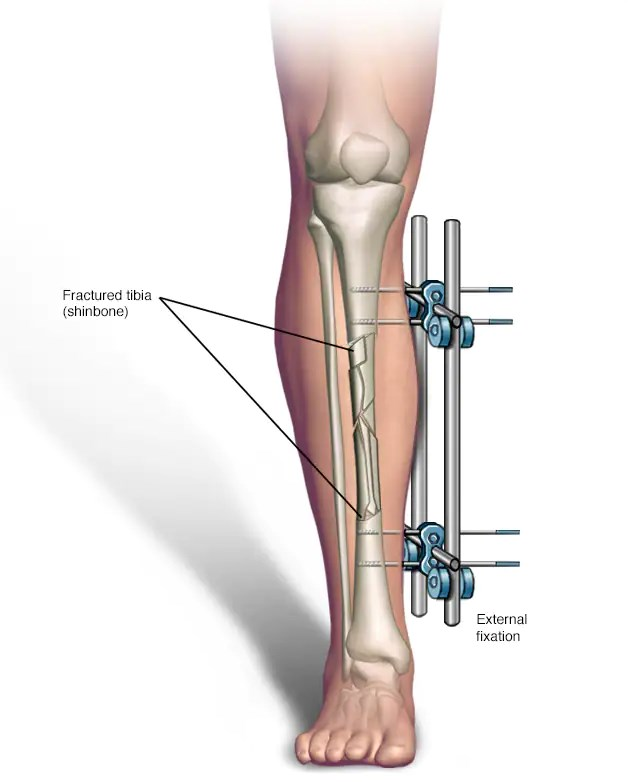

Reemplazos Articulares:
La cirugía de reemplazo articular o artroplastia se considera como la última opción de tratamiento para los pacientes con artritis y artrosis avanzada de cadera, rodilla u hombro. Por lo tanto, solo se recomienda en aquellas personas con esta afección que con un tratamiento no quirúrgico previo no han obtenido los resultados deseados y siguen presentando dolor en las articulaciones.
Reemplazo de cadera

Reemplazo de rodilla
Reemplazo de hombro

Reemplazo de codo
Reemplazo de tobillo
Artroscopias:

La artroscopia es un procedimiento para diagnosticar y tratar problemas en las articulaciones. El cirujano inserta un conducto delgado conectado a una cámara de video de fibra óptica a través de una pequeña incisión del tamaño de un ojal. La imagen dentro de la articulación se transmite a un monitor de video de alta definición.
La artroscopia le permite al cirujano ver dentro de la articulación sin realizar una incisión de gran tamaño. Los cirujanos pueden incluso reparar ciertos tipos de daños articulares durante la artroscopia a través del uso de instrumentos quirúrgicos delgados como un lápiz que se insertan en pequeñas incisiones adicionales.
Artroscopia de rodilla

Artroscopia de hombro
Artroscopia de cadera

Artroscopia de codo

Cirugías de Fijación Externa:
Las cirugías de fijación interna o externa son cirugías que se hacen con el propósito de corregir fracturas, deformidades, realizar alargamientos o manejar otro tipo de patologías osteomusculares. Se realizan con colocación de material de osteosíntesis especializado según el requerimiento del paciente.
Fijación interna de tobillo

Fijación tibia
Tutor ilizarov

Recomendaciones Generales:
Antes del procedimiento
Después del procedimiento
Signos de alarma